In the past year, I have been to 3 concerts. Due to the ever increasing prices of concert tickets, I choose to go to concerts of only those artists whose sound I like a lot. This portfolio is a comparison of the 3 artists whose concert I saw, and the albums they toured with.
- The 3 artists and albums are:
- Wolf Alice- The Clearing
- Laufey- A Matter of Time
- Lizzy Mcalpine- Older (and Wiser)
- The 3 songs I have chosen to represent each of the albums are respectively:
- White Horses
- Carousel
- Broken Glass
As I am investigating the reasons for my interest in hearing these albums in a concert, I chose the songs which I enjoyed listening to the most in the concert.
With this corpus, my purpose is to investigate how similar or different my tastes are in regards to who I want to see in concert. I want to identify whether there are common features which may draw me to these albums.
My initial hypothesis is that there will be quite a lot of differences.
I perceive Lizzy Mcalpine to have a slow and soothing sound. She writes more traditionally ‘sad’ songs, but as she is supported by a band, they are sometimes also quite instrument heavy. Laufey is known to combine Jazz, Pop and Classical music. I would describe her songs as more whimsical, as if you were in a fairytale. Wolf Alice is an alternative rock band, with more energetic songs than the other two.
Laufey’s music is a mix of classical music, jazz and bedroom pop. Her music can range from sad and melancholic to a more playful sound. In my opinion, all her songs have a ‘fairytale’ sound to them, which may be due to the influences from ballet.
Lizzy Mcalpine dabbles majorly in the genre of Indie pop. Even though her latest album ‘Older (and Wiser)’ has a bigger focus on instrumentation, with a sort of rock feel as well than her previous work. One can still feel the common theme of emotional rawness throughout, perhaps even more so by recording with a live band for this album.
Wolf Alice is an Indie/Alternative rock band. They are naturally more instrumental heavy, and more energetic than the other two as well. I would expect their songs to have more valence, energy and loudness.
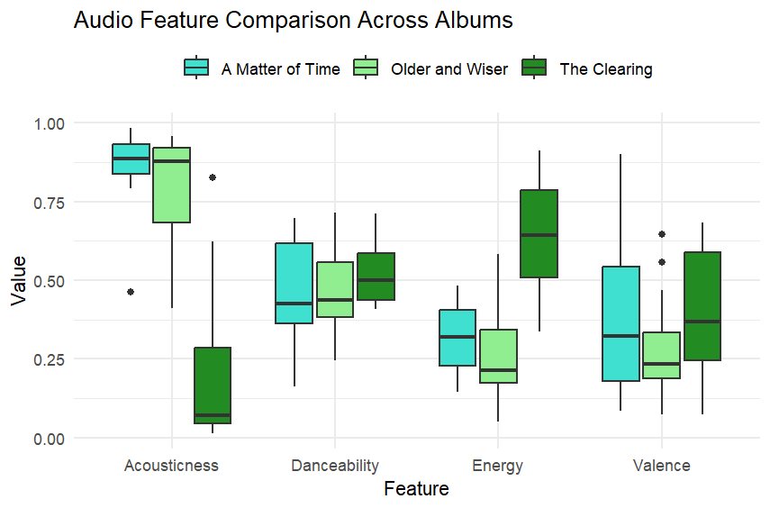
In this image we can see that indeed, acousticness in The Clearing is much lower than the other two and energy is much higher. An interesting result is that the danceability for all 3 albums are pretty similar, and the valence for ‘Older’ and ‘AMAT’ is similar. In both my experiences listening to the albums online and in the concert, there was a noticeable difference in those features.
Older is almost entirely the type of album to which you would just sit down and listen. A matter of time has variety between ‘danceable’ songs and more slower songs. However, when listening it feels much more ‘happy’ than Older. Most of the songs in The Clearing were quite danceable songs.
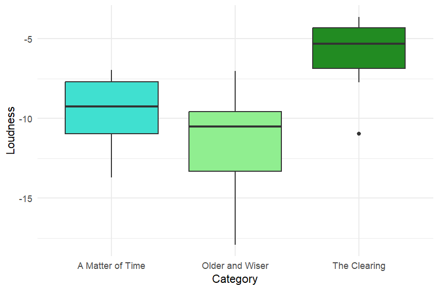
In loudness, as expected, The Clearing is louder than the other two.
Overall, we can see that the albums ‘A matter of time’ and ‘Older and Wiser’ tend to be more similar to each other, than either of them are to ‘The Clearing’. If one were to listen to these albums, this is also quite clear sonically.
Chromagrams tells us which pitch classes are being played in the songs. In order to calculate the chromagrams, I found that the ‘chebyshev’ norm gave the clearest graph.
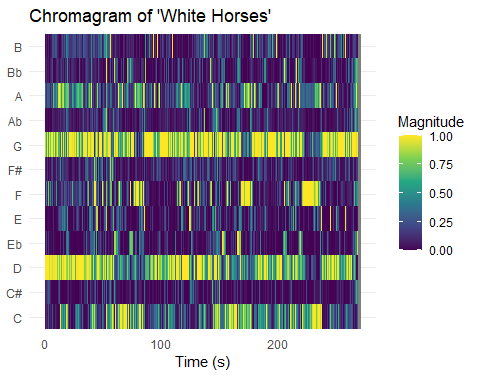
In the chromagram we can see an almost continuous high magnitude for pitch classes G and D. I believe this is indicating the guitar. The guitarist plays a consistent riff throughout the song which is quite prominent. The only very noticeable gaps we see are around 80 seconds, 170 seconds, and 230 seconds which are the three parts of the song where the chorus is being sung. In these parts, since the vocals become much louder, and the guitar much softer, the software picks up on that instead.
In these parts we can see the pitch F being picked up, this is of the vocals in the chorus. Another interesting thing to note in the chorus, the vocals always go from Eb to F. During the lyrics, ‘Know who I am..’ she sings in Eb but starting from ‘That’s important to me..’ she goes into F.
Finally, the parts where the C pitch suddenly has very high magnitude and then fades out, is where the bassist played just one C note, and then that note gradually fades out.
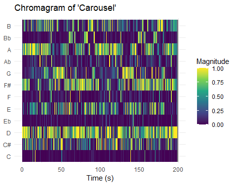
In carousel, there is a repeating motif (a pattern using the notes D,E,F#, B) played with the Dmaj chord in a 4/4 rhythm on the piano while these notes are being played. This can be seen right at the start of the song up until around 10 seconds.
At 10 seconds, we see that the the vocals start with the chord Dmaj still being played in the background, but the pattern of notes stop. Here, we can see the pitch class E have a higher magnitude, which is of Laufey’s vocals.
There is a similar repetition of what I have described above throughout the song.
Another interesting thing to note is there is a pitch change in the vocals around 40 seconds and 125 seconds, where we can see this pitch class G. This is where she sings the pre-chorus which is a distinctly different pitch from the vocals of the rest of the song.
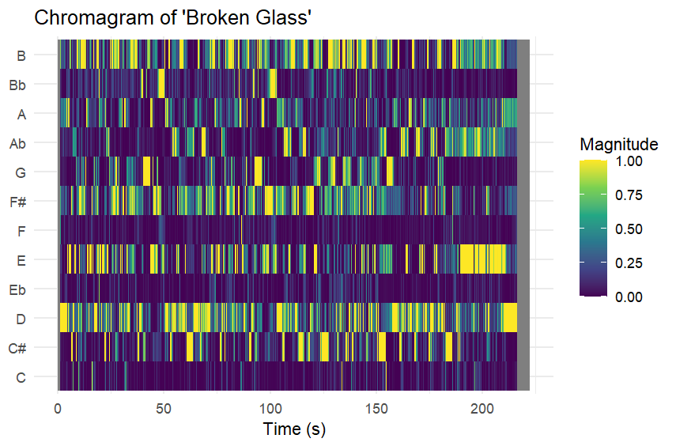
‘Broken glass’ has 4 main sections of the song. Until around 130 seconds, the song is slow, which is usual for her style, however while it is slow, it does have quite a bit of instrumentation. Around 130 seconds it builds up to a part with heavy drums, loud vocals, and an energetic, almost rock sound. Which goes back to to the slow sound around 150 seconds. And finally, around 180 seconds, the vocals completely disappear and the it’s just an instrumentation part with heavy drums, guitar and piano.
This could explain why around 150 seconds, G pitch completely disappears and we see Ab a lot more consistently
Also at 40 seconds and 100 seconds we see tiny sections in Bb, here she changes to a much higher pitch, singing in a head voice.
We can see that ‘White Horses’ has the cleanest chromagram, which makes sense as this song follows a quite repetitive pattern with the same drum beat, guitar riff and vocals throughout.
‘Carousel’ is a bit harder to interpret, this is due to the many different instruments used. There are string instruments which are known to have a lot of harmonics, which must be getting captured, flute sections, and of course the piano going on in the background as well.
‘Broken Glass’ also does not have the cleanest chromagram. This is because there are many instruments involved, again there’s strings, flutes, drums, and very heavy vocals throughout.
From the analysis of the chromagrams of these three songs, I see the same pattern that Laufey and Lizzy Mcalpine’s songs are more similar to each other, than they are to Wolf Alice’s songs.
However, it can also be seen that all the songs have one similarity: they all make heavy use of instrumentation, though in different forms. Be it through the vocals and the subtle instrumentation or the heavy use of the drums and guitars, all the songs make heavy use of instrumentation. From this, I conclude that I tend to enjoy songs that make heavy use of instrumentation in a live setting. Hearing many instruments together creates a very powerful atmosphere, and gives concerts that distincly “live” and “real” feel
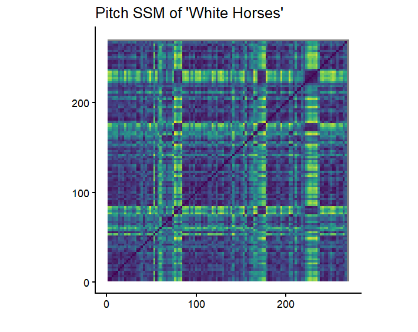
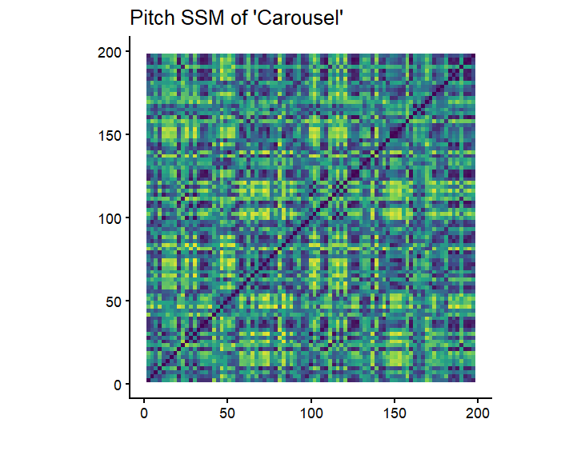
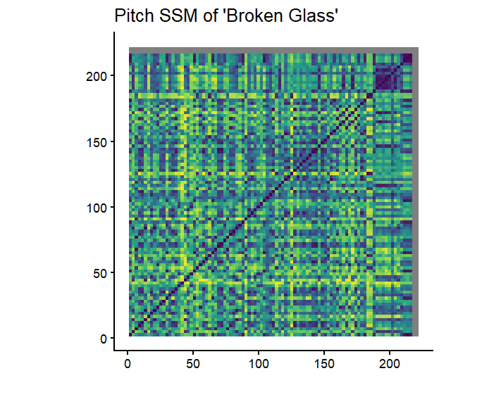
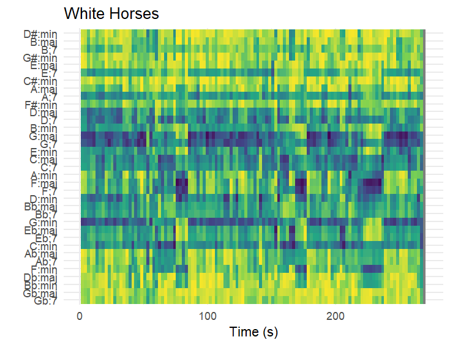
Here we can see that the horizontal bands corresponding to chords stay relatively stable throughout. This means it’s a harmonically stable song.
The song follows a ABCABC structure. With verse1 then pre-chorus then chorus and then repeat. We can see for A the chords mainly correspond to G major and for the pre-chorus it’s at C major and then A minor for the chorus.
We can see this same pattern a few rows before and this would be because even those chords are being simultaneously played/ detected.
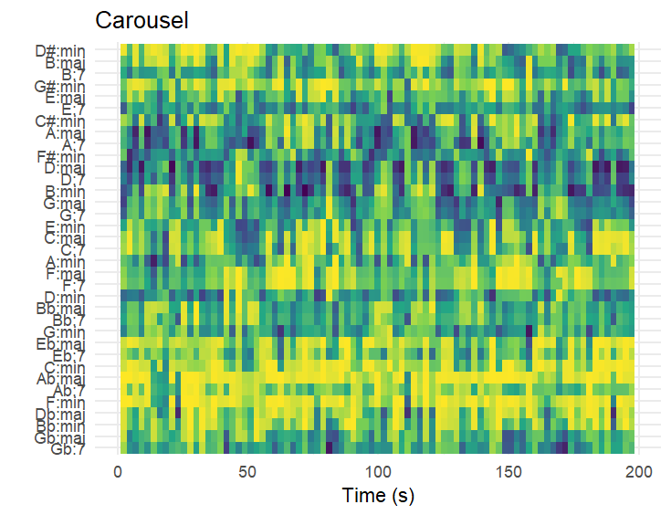
Carousel also shows a structured chord progression, there is a bit more variation than in White Horses, however it still is quite clear throughout.
The contrast that we do see is the verse, chorus, verse, chorus structure. So the verse is at A major and E minor. The chorus is played on the Dmaj7 chord.
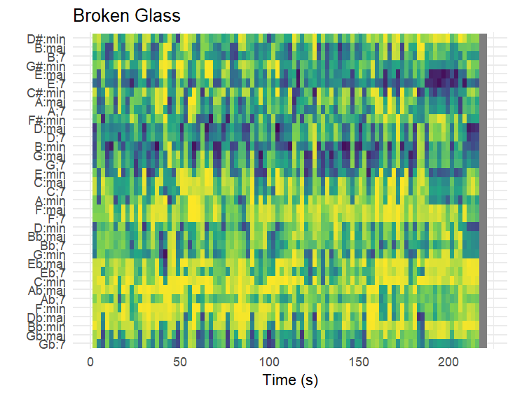
The chordogram for Broken Glass has the most variation between the three songs. This suggests more chord changes, but also the chordogram is not very stable, this may be due to the layered instruments.
We can once again see here the sudden change around 190 seconds, where we have the final instrumental section
I used these specification
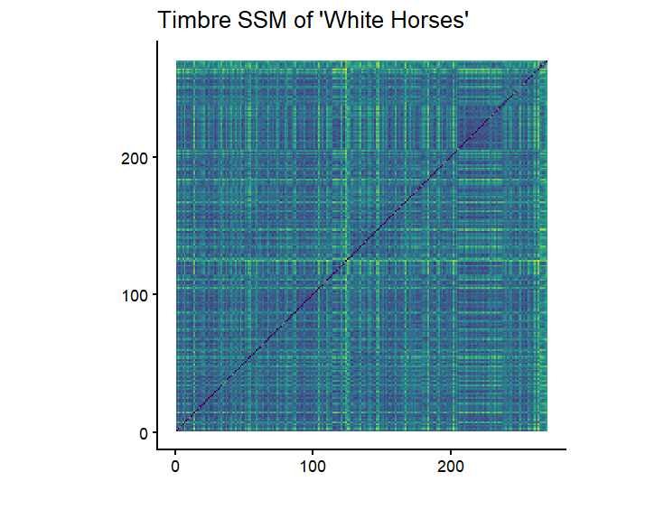
By now, it has been well established that White Horses is a relatively simple song.
This is even more so in its instrumentation. The drummer plays the same beat throughout, the guitarists plays the same riff throughout. This is well represented here in the timbre SSM.
Most of the graph looks quite homogeneous. The only very clear “different” part we see in the song is at around 115 seconds where the drummer plays a fill which he does not repeat again.
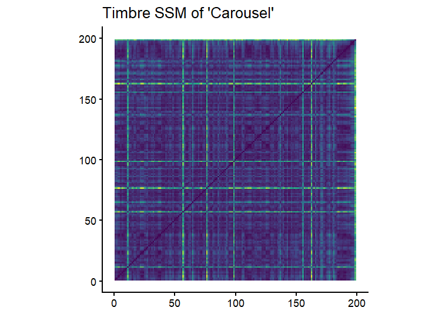
Carousel lends quite a clear SSM for timbre. There are quite clear distinctions between the different homogeneous blocks. Most of the yellow cross lines correspond to when the piano motif (which I had talked about earlier) starts or when in goes back to the main melody of the song.
Although there are quite a lot of instruments used throughout the song, they are used in a similar pattern throughout.
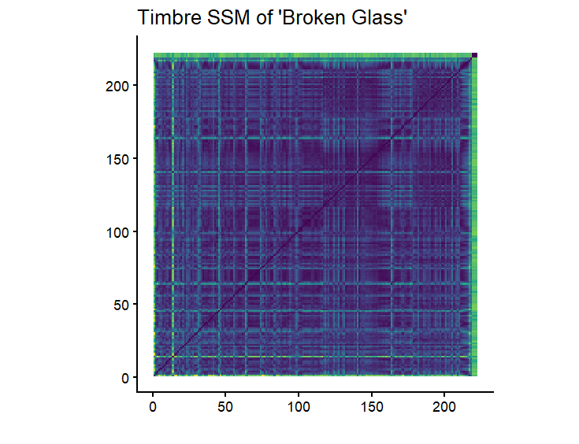
The timbre SSM for Broken Glass is quite interesting. This is because when one listens to the song and looks at the SSM, it’s very hard to understand on what basis it’s separating the homogeneous blocks.
It is clear that the brightest yellow cross is when the song actually starts. Before that there is a build up sound, however none of the instruments or vocals have started yet.
After this, I would expect the next separation to be at around 90 seconds and what in my opinion should be the clearest separation at 115 seconds, where the part with the heavy instrumental starts. However, this isn’t the case
In the end you can see a thick band of green and that corresponds to the last part which is an instrumental section.
I had concluded before that I enjoy songs which have layered instruments and can give the ‘live’ feel. While this does lend to the timbre feature. I believe there is not exact pattern to be found here. As the choice of which instruments I tend to like, that is completely different across the songs. These songs vary from a rock feel to more of an orchestral one. Which are very different in terms of timbre.
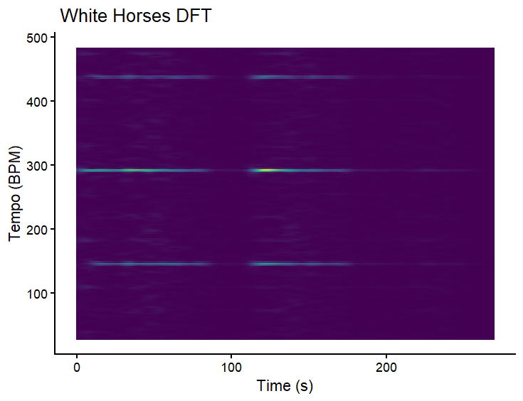
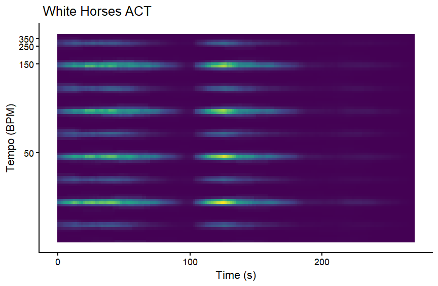
For white horses, we can see that while both tempograms are clear. The ACT tempogram catches more tempo harmonics, and it is hard to interpret which is the actual tempo and which are the harmonics.
In DFT, we can see that the tempo is around 150 bpm. It does make tempo 300 bpm the brightest, however that is just a tempo octave.
It is quite easy for the software to find a clear tempo pattern since there is a repetitive drum beat which is in 4/4. Which is also likely why DFT worked better than ACT.
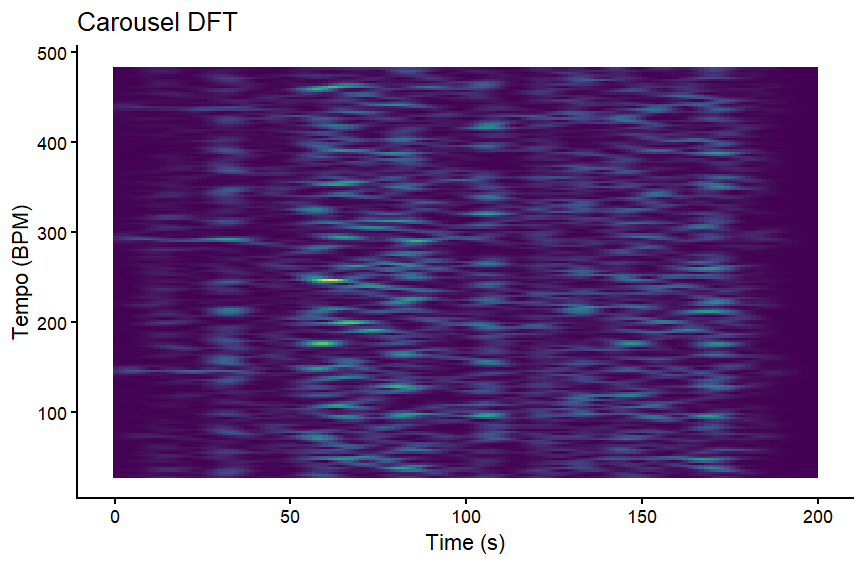
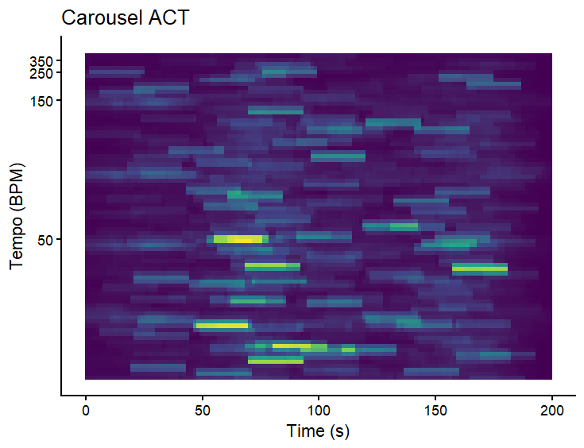
In carousel, both DFT and ACT did not detect the tempo well at all.
Carousel does not have a clear steady beat and has more of an emphasis on melody and harmony, which would explain why it was hard for the software to detect a tempo.
Because there is no stead beat, DFT fails completely. ACT does not fair much better, but at least shows possible tempos, albeit there are so many that one could not know where to start in interpreting.
This might also be because Carousel is in the time signature 3/4, which combined with the many different orchestral instruments like piano and violin, which are playing different melodies simultaneously. This would make it quite hard to find tempo.
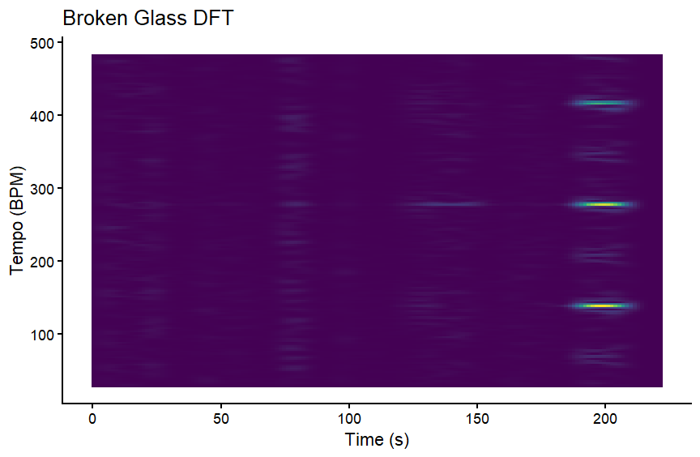
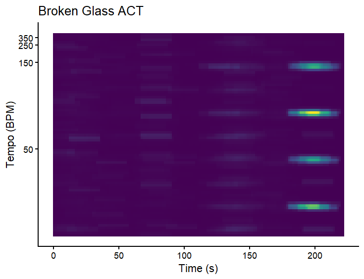
In Broken Glass, DFT and ACT both do not detect anything for the majority of the song, up until the last 40 seconds.
This is probably because most of the song just consists of Lizzy singing without much of a consistent rhythm or beat behind her vocals. The only ‘beat’ which could be used comes in the instrumental section (at the end) when the drums are introduced, which is when both DFT and ACT is able to accurately find a tempo.
The actual tempo for the three songs are: Broken Glass- 139 bpm, White Horses- 146 bpm, Carousel- 146 bpm. So on average, I enjoy a little faster of a tempo.
On the basis of the track feature analysis, and listening experience as well. I expect A Matter of Time and Older(and Wiser) to be harder to tell apart. They are both more acoustic, similar in energy and in other features as well.
I used the Random Forest algorithm for classification. This is because it performs quite well in most real world use cases.
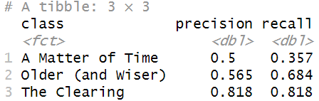
Recall measures how many of the total true songs did the algorithm actually identify.
Precision measures out of the songs which were marked as true, how many were actually true.
From these numbers, we can see that it was hardest for Random Forest to be able to classify ‘A matter of time’ and easiest for ‘The Clearing’.
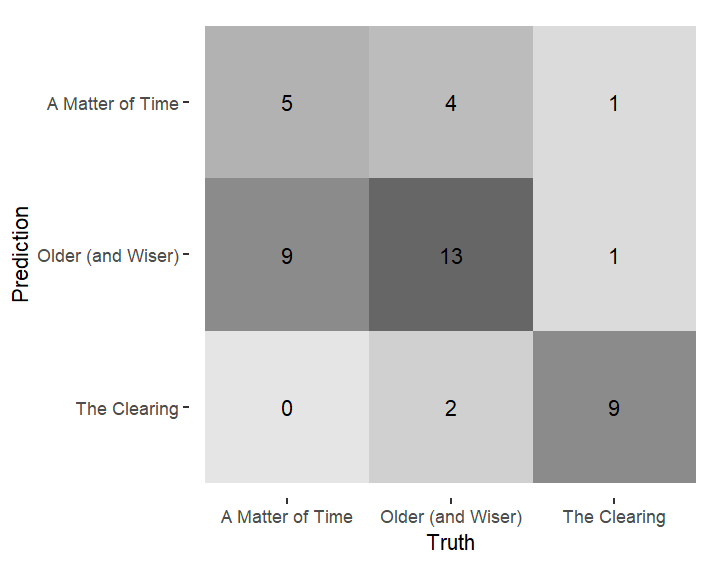

On the basis of the track features once more, I expected energy and acousticness to play the biggest role in identification of the albums.
While these two did play a big role, so did loudness and interestingly speechiness. In hindsight, loudness was different between the three albums, however it is quite an unexpected conclusion that if would have such a big role.
Speechiness is one feature I did not expect at all, while initally doing the track feature analysis, it did not stand out necessarily and even while listening to the albums, there are barely any moments I would classify as speechy. However, it could be possible that the Spotify algorithm picks up the softer vocals like that in many songs of Lizzy Mcalpine’s as speechy.
This differentiation also sheds light on the fact that the albums are similar in features such as valence, danceability, tempo, etc. I can then conclude that it is these features which are the common thread of why I like these three albums.
Specifically danceability, instrumentalness and liveness being similar to each other gives a nice commonality as to why I specifically felt these albums were worth listening to in a concert.
From this analysis, I have come to understand that my initial hypothesis that these three artists would be quite different was only partially true. This is because, although the three musical works differ considerably in their genres, timbres, and musical identities, they also have some musical features in common that may have influenced my preference for all of them in a live concert setting.
From The Clearing, A Matter of Time, and Older (And Wiser), it is evident that all three musical works focus on instrumentation, arrangement, and the sense of ‘liveness’ in their musical composition. However, this sense of ‘liveness’ is achieved in different ways in the three musical works. For Wolf Alice, this sense of ‘liveness’ is achieved through the rock sound, in Laufey’s songs it is achieved through the orchestral and jazz sound, and in Lizzy McAlpine it is achieved through the band sound. Nonetheless, the fact that all three musical works have a specific way of harmonzing their instruments where they work in unison to create a special sound is definitely a common reason for my interest in hearing them live.
Moreover, it is evident that all three musical works have some musical features in common, including their danceability, tempo, and valence. This may also have been a reason why I have a relatively consistent musical taste, even though the genres of the three musical works differ considerably.
It is interesting to note, however, that A Matter of Time and Older (and Wiser) are similar to each other, while both are different from The Clearing, both in terms of their audio features and their structure. However, this similarity alone does not define my preferences. My preference is not necessarily about genre, but about variety within a certain framework. That is, while I enjoy variety within the genre, I still enjoy music with great instrumental presence and an engaging live atmosphere.
Finally, I realised that the songs which I chose were definitely not the most representative song of the albums themselves. From The Clearing I ended up choosing one of the more musically simple songs in the album as was seen in the tempogram, chordogram, chromagram and timbre ssm. While it still had their signature sound. From A Matter of Time I chose one of the more ‘playful’ songs, which definitely has the fairytale-like sound. This is a harmonically complex song, with orchestral elements, all the while maintaining the simple pop-song structure. From Older(and Wiser) I chose one of the more instrumentally dynamic songs. It has a heavier sound than her usual songs which are more melancholic and slow. This does still have the very emotional feel as her songs usually do.
However, regardless of this finding. I believe these songs were the best choices I could’ve made to reflect my personal preference, and captured very well why it is that I like each of these albums and artists.